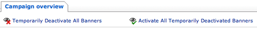

OpenAds is an open source ad serving software package. It’s pretty nice too, but one thing it won’t let you do is easily deactivate all banners belonging to a specific client. This can be a pain when those banners are remotely hosted and that host goes down, bringing your site along with it (well, not down, but making it less attractive). The following is a patch that makes this possible. It’s a bit on the hackish side, but it does work.
The patch works by adding two new links on the ‘Campaign Overview’ page for a given client.

It works by deactiving all of the client’s currently active banners and prepending the banner’s description with “TEMP_DEACTIVATED (priority=123)” (where 123 is the priority for that banner.
This is the hackish part. It’s necessary to change the description in order to save the priority as the system will set the priority to zero for any deactivated banners.
To install this patch, download the following TGZ file, extract it, and read the README inside.
Note: The below patch was against OpenAds 2.0.11-pr1. Other versions might require some manual tweaking.